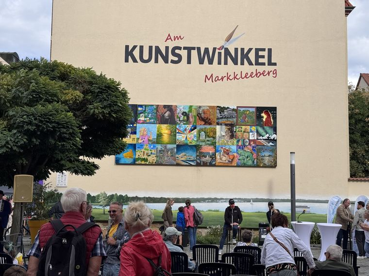
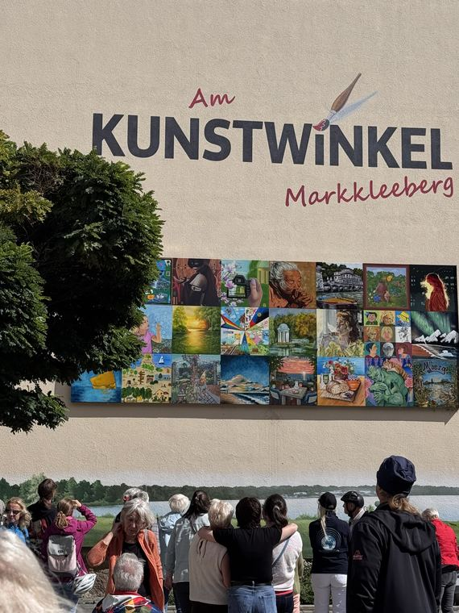

Am Kunstwinkel, Markkleeberg
„Die Morgenpfeife“ wurde als eines von 24 Werken für die Freiluftgalerie 2026/27 an der Kunstwinkel-Wand ausgewählt, unter dem Motto „Mein Bild für Dich“. Enthüllt wurde die Sammlung beim 8. Kunstwinkelfest am 5. September 2026; das Bild hängt dort ein volles Jahr.

Die Morgenpfeife
Acryl auf LeinwandEine alte Frau zieht an ihrer Pfeife, beide Hände darum gelegt. Das ganze Bild bleibt in einem einzigen schmalen Bereich aus warmem Ocker und Rosa — das Licht übernimmt die Arbeit, die sonst die Farbe leistet.
In der Galerie ansehenWie das hier funktioniert
Der Kunstwinkel ist eine dauerhafte Freiluftgalerie an einer Hauswand in der Rathausstraße 23 in Markkleeberg. Jedes Jahr wählt die Stadt 24 eingereichte Werke aus, bringt sie für zwölf Monate an der Wand an und versteigert sie beim Kunstwinkelfest des Folgejahres — der Erlös geht an die Künstlerinnen und Künstler und an das Projekt.
| Ausstellung | Am Kunstwinkel — Freiluftgalerie, Sammlung 2026/27 |
|---|---|
| Motto | „Mein Bild für Dich“ |
| Gezeigtes Werk | Die Morgenpfeife |
| Enthüllt | 5. September 2026, beim 8. Kunstwinkelfest |
| Zu sehen bis | Kunstwinkelfest 2027 |
| Ort | Rathausstraße 23, 04416 Markkleeberg |
| Ausgewählte Werke | 24, von 24 verschiedenen Kunstschaffenden |
| Veranstalter | Stadt Markkleeberg |
Die Versteigerung läuft noch nicht. Die Sammlung 2026/27 — zu der dieses Bild gehört — wird beim Kunstwinkelfest im September 2027 versteigert. Einige Wochen vorher veröffentlicht die Stadt einen Online-Katalog beim Auktionshaus IKV Fester, in dem schon vor der Live-Auktion Gebote abgegeben werden können.
Sobald die Stadt den Link veröffentlicht, steht er hier. Bis dahin:
Wenn Sie nicht bis zur Versteigerung warten möchten: Srijana hat weitere Originale direkt verfügbar — zur Galerie oder schreiben Sie ihr.
Am Tag der Enthüllung
Ein paar Sekunden vom 8. Kunstwinkelfest — die Kamera hebt sich von der Künstlerin zur Wand, wo ihr Bild in der oberen Reihe hängt.
Srijana Am Kunstwinkel, 5. September 2026.
Die Enthüllung
Das 8. Kunstwinkelfest, als die neue Sammlung an die Wand kam.





